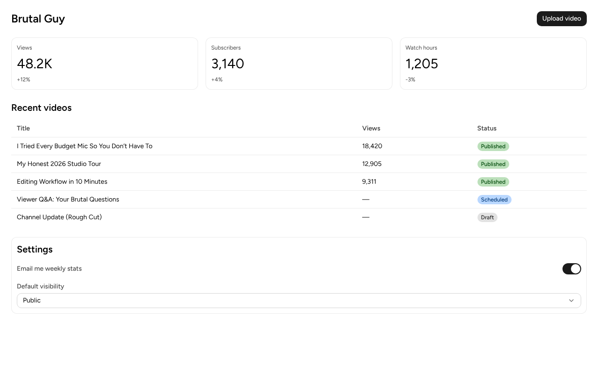

Meta's Astryx: is it really agent-ready?
Repo: meta/astryx (MIT, beta 0.7.11) · #2 on GitHub Trending today, +3.3k stars in a day.
Claim: "An open source design system that's fully customizable and agent ready."
Claude Code (Claude Sonnet, direct API) built a working dashboard with Astryx in 3 of 3 runs from the same prompt: each run used the Astryx CLI, hit a few errors (wrong component names, a type error or two) and fixed them itself, and every build passed and loaded with zero console errors. The fine print: it's beta, the JS bundle was ~720 kB for one page, and Meta's own benchmark (issue #2182) shows agents drifting off the system when they read the long theme docs.
Correction (Nov 9): an earlier version of this page said Claude Code won't see the guide because init writes AGENTS.md but no CLAUDE.md. We checked: Claude Code 2.1.319 loads AGENTS.md on its own (asked with no tools, it quoted the guide in 2 of 2 tries). That claim was wrong and is removed from the video.
Claims checked
| Claim | What we found | Call |
|---|---|---|
| 150+ accessible components | The guide init writes says 174 components (v0.7.11). | TRUE |
| Agents build with it, from the docs, not guessing | 3 of 3 runs: the agent used the CLI (build, template, component, search) and built the header, 3 metric cards, a table with status badges, a switch and a select. Errors it hit and fixed itself: Select is Selector (all runs), justify="space-between" should be "between", a Grid import path. All builds pass; all pages load with 0 console errors and the switch and select work. | TRUE |
init writes the guide for your agent | Wrote AGENTS.md + GEMINI.md (no CLAUDE.md) in all 3 runs. Claude Code 2.1.319 loads AGENTS.md by itself, so this works out of the box. | TRUE |
| No build plugin, just CSS imports + a provider | Two CSS imports + <Theme> in main.tsx; vite.config untouched. | TRUE |
| Grew inside Meta for 8 years, 13,000+ apps | Meta's own statement; can't be checked from outside. | UNVERIFIED |
Install commands that worked
npm create vite@latest my-app -- --template react-ts cd my-app npm i @astryxdesign/core @astryxdesign/theme-neutral @stylexjs/stylex npm i -D @astryxdesign/cli npx @astryxdesign/cli init # writes AGENTS.md (+ GEMINI.md); Claude Code reads AGENTS.md itself npx astryx theme add neutral npm run buildAlways use the scoped name
@astryxdesign/cli until it's installed: plain astryx on npm is an unrelated package.The exact prompt
prompt.txt (Claude Code, claude -p, model claude-sonnet-5-5, max 45 turns).
The result

- App.tsx · main.tsx (the agent's code, unedited)
- Reruns + AGENTS.md check: files/verify/
- Full run transcripts: part 1 · part 2 (resumed; our shell has a time limit per command)
- Tokens for the successful session: 18 turns, ~6.9k output tokens, ~25k fresh input, ~432k cached input re-reads.
What broke + fixes
- Older Claude Code or another agent that only reads CLAUDE.md? Add a one-line CLAUDE.md with
@AGENTS.md. Current Claude Code doesn't need it. - Type error: HStack wants
justify="between", not CSS's"space-between". - Component names differ from the usual: it's
Selector, notSelect. Runnpx astryx search "<thing>"first. - The dashboard template pulls in recharts + heroicons. The agent skipped it and built from the
TableInCardandSwitchSettingsPanelblocks. - Bundle: 723 kB JS (Vite warns). Fine for apps, heavy for a landing page.
- Not done: the agent didn't run
astryx doctor --built dist, which the guide asks for. Run it yourself.
Fine print
- One task, one model (Sonnet), 3 runs. Not a benchmark.
- The page looks clean but plain: the -3% delta isn't coloured red, for example. Astryx gives you correct, consistent UI; the design taste is still yours.
- Beta: five releases in the week before this test (0.7.7 → 0.7.11). Pin your version.
- Meta's own issue #2182: in their benchmark, agents that read the dense theme doc dropped to 20-45% compliance (94% when they didn't). Brand theming beyond buttons/cards/inputs is reported as limited (Evangeline Ng's July test).
Who it's for / what to use instead
- Use Astryx if you build React 19 apps (dashboards, settings, admin, chat UIs) with Claude Code / Cursor and want the agent to use one consistent, accessible component set.
- Use shadcn/ui if you want to own and edit every component's source, need heavy brand customisation, or care about bundle size.
- Skip it for marketing pages and non-React stacks.
All test kits · Instagram · YouTube · Spotted a mistake? Comment on the video.